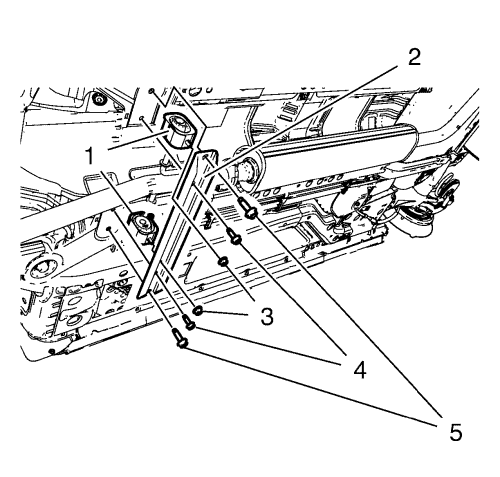
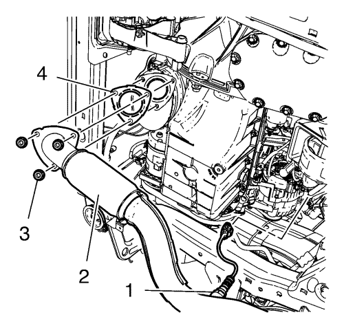

Sustitución del sistema de escape 1.6L LDE, LXT, LXV y 1.8L 2H0
Herramientas especiales
CH 6614 Cortatubos de cadena
Si desea informarse sobre herramientas regionales equivalentes, consultar Herramientas especiales .
Procedimiento de desmontaje
Advertencia: Consulte Advertencia de servicio del sistema de escape en la sección Prólogo.
Advertencia: Consulte Advertencia sobre guantes y gafas protectoras en la sección Prólogo.
- Suba el vehículo a la altura máxima. Consultar Elevación y soporte en alto del vehículo .

- Secciónelo con el cortatubos CH 6614 (1) y separe el silenciador trasero de escape (2).

Nota: Es necesaria una segunda persona.
- Descuelgue el silenciador trasero de escape (3) de su aislante (1, 2).
- Desmonte el silenciador trasero de escape.

Nota: Es necesaria una segunda persona.
- Desmonte los 4 tornillos del soporte de suspensión delantero del tubo de escape (4, 5).
- Desmonte las 2 tuercas del aislador del soporte de suspensión delantero del tubo de escape (3).
- Desmonte la sujeción del soporte de suspensión delantero del tubo de escape (2).
- Desmonte los 2 aislantes del soporte de suspensión delantero del tubo de escape (1).

Nota: Es necesaria una segunda persona.
- Desmonte la sonda Lambda calentada (1).
- Desmonte las 3 tuercas (3) del catalizador al tubo de escape (2).
- Desmonte la junta del catalizador y el tubo de escape (4).
- Desmonte el sistema de escape.
Procedimiento de montaje
Advertencia: Consulte Advertencia de servicio del sistema de escape en la sección Prólogo.
Advertencia: Consulte Advertencia sobre guantes y gafas protectoras en la sección Prólogo.
Nota: Es necesaria una segunda persona.
- Monte el sistema de escape.
- Monte la junta nueva del catalizador y el tubo de escape (4).
Precaución:Consulte Precaución con las fijaciones en la sección Prólogo.
- Monte las 3 tuercas nuevas (3) del catalizador y el tubo de escape (2) y apriételas a 20 N·m (15 lib. pie).
- Monte la sonda Lambda calentada (1) y apriételo a 40 N·m (30 lib. pie).
- Monte los 2 aislantes del soporte de suspensión delantero del tubo de escape (1).
- Monte el apoyo del soporte de suspensión delantero del tubo de escape (2).
- Monte las 2 tuercas (3) del aislante del apoyo del soporte de suspensión delantero del tubo de escape y apriételas a 20 N·m (15 lib. pie).
- Monte los 4 tornillos del aislante del apoyo del soporte de suspensión delantero del tubo de escape (4, 5) y apriételos a 25 N·m (19 lib. pie).

Nota: Es necesaria una segunda persona.
- Monte el silenciador trasero de escape.
- Cuelgue el silenciador trasero de escape (3) en su sitio (2, 4).
Nota: Utilice una abrazadera de tubo de escape nueva.
- Empalme el silenciador trasero de escape y el silenciador con una abrazadera de tubo de escape en la posición (1) y apriete la abrazadera a 20 N·m (15 lib. pie).
- Baje el vehículo a la altura máxima.
| © Copyright Chevrolet. Reservados todos los derechos |